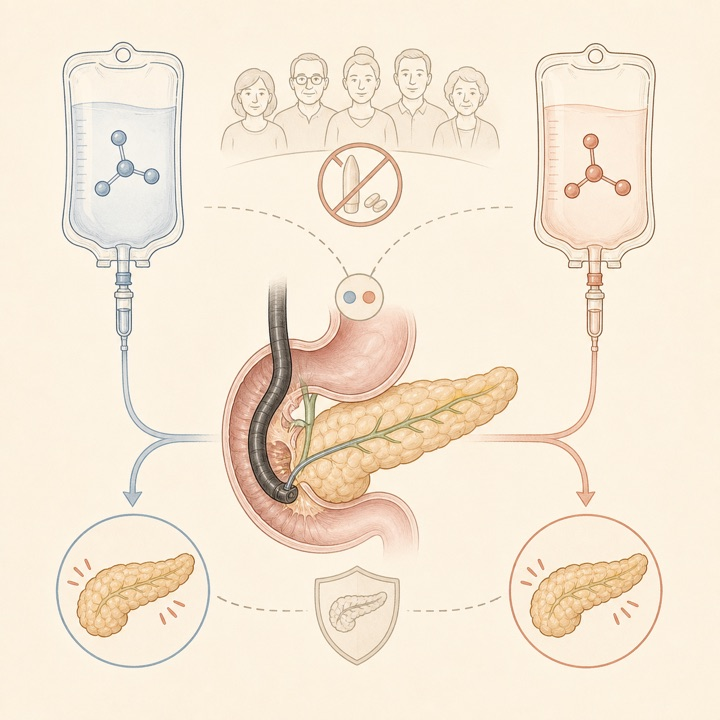
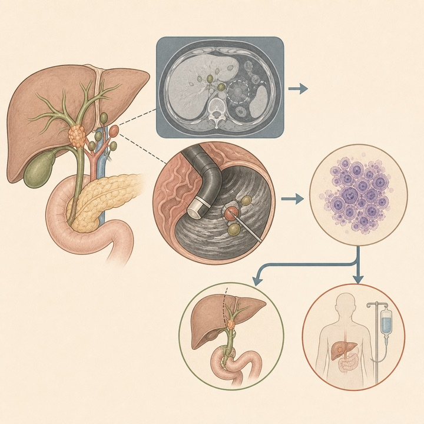
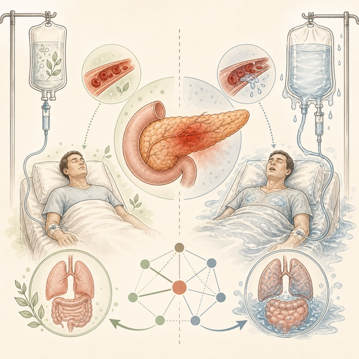
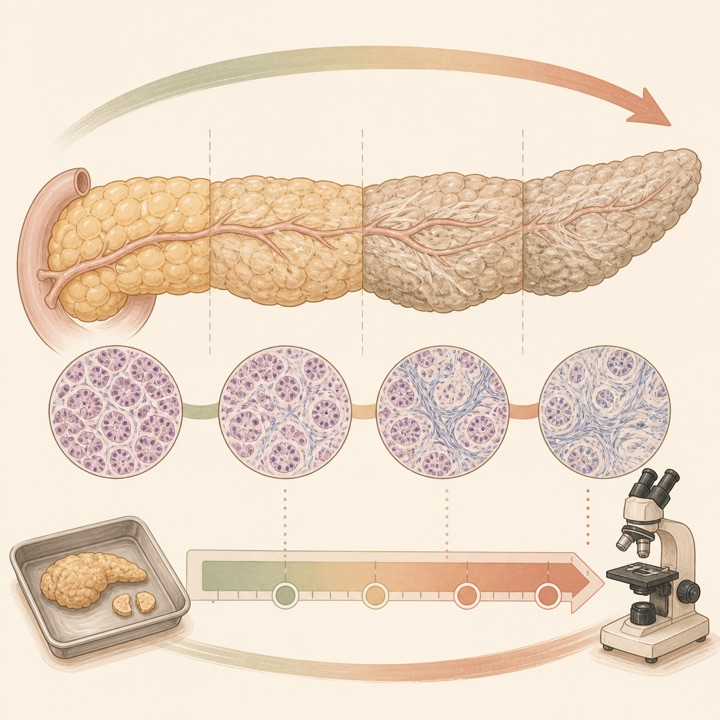
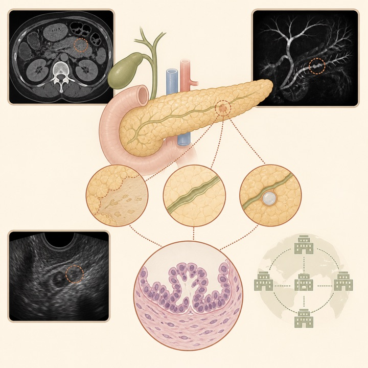
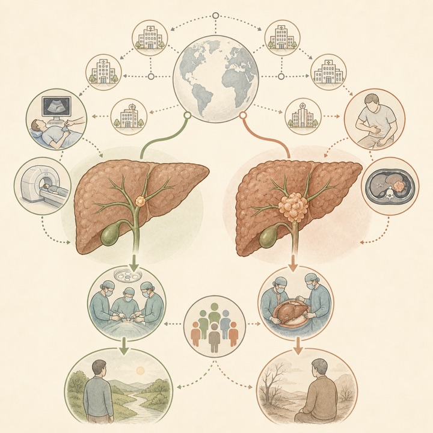
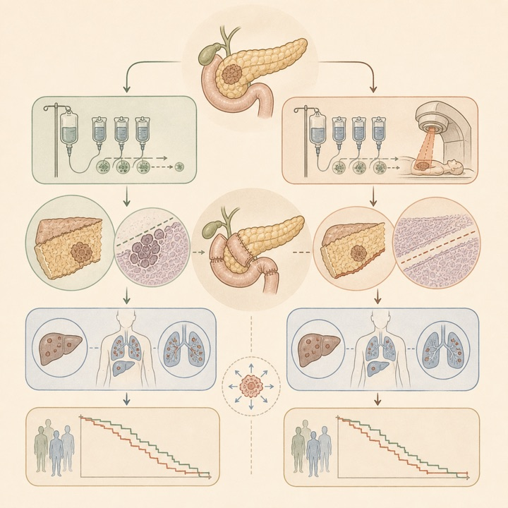
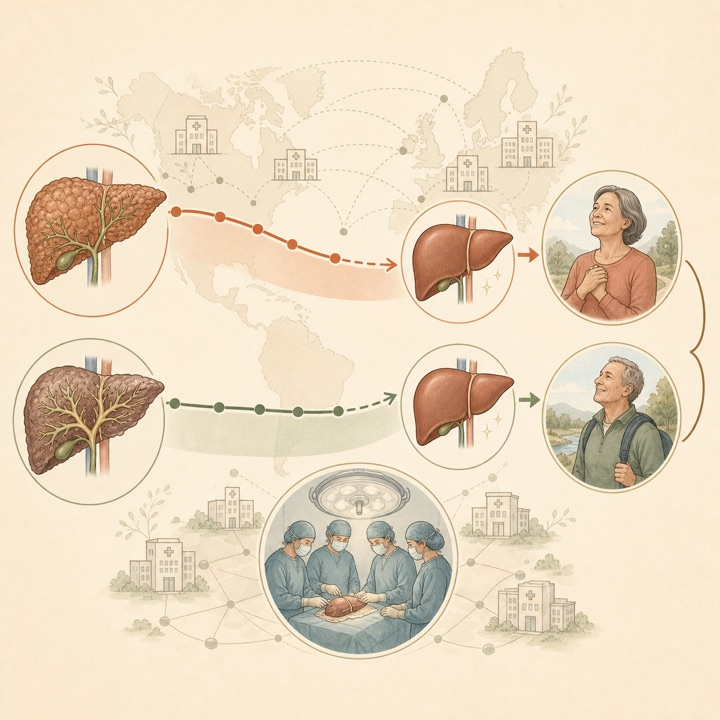

NSAIDsが使えない環境では酢酸緩衝液は乳酸リンゲル液を上回らず
UEG Journal / Q1Double-blind multicenter RCT
813例でERCP後膵炎は11.5%対12.4%。4時間症状誘導型輸液の実装可能性も示されました。
Tokai University Pancreatobiliary Group
This Week's Pancreatobiliary Research Highlights
臨床的重要性、研究デザイン、対象規模、診療への応用可能性を基準に4報を選定しました。IFとJCR quartileは2025年値（2026年公表、判明した最良カテゴリ）を参照しています。
813例でERCP後膵炎は11.5%対12.4%。4時間症状誘導型輸液の実装可能性も示されました。
12 RCT・1,216例でLRは重症化と局所合併症を減らし、積極的輸液は有害事象を増やしました。
3,743例で慢性肝疾患群は限局期診断57%、根治目的手術60%。監視の寄与が示唆されます。
マッチ後452例でR0・リンパ節陰性率は改善しましたが、再発・無イベント生存・全生存は変わりませんでした。
日本語: 直腸NSAIDsが利用できない韓国3施設で、中〜高リスクかつ未処置乳頭の813例を乳酸リンゲル液（LR）404例と酢酸緩衝平衡晶質液409例に無作為化しました。ERCP前後10 mL/kgボーラス＋3 mL/kg/時を4時間投与し、症状時のみ8時間へ延長。ERCP後膵炎は12.4%対11.5%（RR 0.93、95%CI 0.64〜1.35）で差はなく、重症例・輸液過負荷はありませんでした。優越性試験のため同等性を証明したわけではなく、NSAIDs併用可能な診療環境への一般化にも注意が必要です。
English: Acetate-buffered crystalloid did not reduce post-ERCP pancreatitis compared with lactated Ringer's (11.5% vs 12.4%). A symptom-guided 4-hour protocol was feasible, but the study neither establishes equivalence nor addresses settings where rectal NSAIDs are available.

日本語: 根治切除または肝移植候補の胆管癌を対象とした9研究831例を統合しました。EUS所見により根治目的手術から除外された割合は全体10%（95%CI 6〜18%）、肝門部胆管癌7%、移植予定群8%。断層画像で捉えなかった悪性リンパ節をEUS組織採取で追加検出する利益は全体3%でした。病期変更に寄与し得ますが、研究間の患者選択・リンパ節サンプリング範囲が異なり、肝門部病変では腫瘍播種リスクを踏まえた経路選択が必要です。
English: EUS findings excluded about 10% of patients from curative-intent surgery, while the incremental yield for malignant nodes missed by cross-sectional imaging was 3%. Selection, sampling heterogeneity, and tumor-seeding considerations limit routine generalization.

日本語: 新規急性膵炎の12 RCT・1,216例を液種と投与強度に分解して解析しました。LRは生理食塩水に比べ中等症・重症化（iOR 0.51、95%CI 0.33〜0.79）と局所合併症（iOR 0.53、95%CI 0.33〜0.85）を低下。積極的輸液は有害事象を増加しました（iOR 3.35、95%CI 1.52〜7.37）。LRを用いた中等量・目標指向型輸液を支持しますが、確実性は低〜中等度で、循環動態・心腎機能に応じた個別化が必要です。
English: Lactated Ringer's was associated with less progression and fewer local complications, whereas aggressive resuscitation increased adverse events. The synthesis supports moderate goal-directed LR, with low-to-moderate certainty and continued need for patient-level tailoring.

日本語: 手術を受けた206例を対照、indeterminate CP、反復性急性膵炎（RAP）、definite CPに分類し、Ammann線維化スコアを比較しました。中央値は順に0.33、2.8、6.5、8.5で全群間に差を認め、遺伝性・特発性RAPでは7回以上の発作を有する例がCPと同程度の線維化でした。一方、発作回数全体と線維化は相関せず、手術選択例に限るため一般集団の診断閾値へ直接適用できません。
English: Histologic fibrosis increased stepwise from controls through indeterminate CP, recurrent acute pancreatitis, and definite CP. Recurrent attacks alone did not correlate with fibrosis, and the surgically selected cohort limits diagnostic generalization.

日本語: 腫瘤を認めず高異型度PanINを疑って切除された155例を対象に、局所実質萎縮、主膵管異常、嚢胞性病変を切除標本へ位置対応させました。357画像部位の悪性病変陽性的中率は所見1種20.7%、2種38.5%、3種77.1%と重複数に応じて上昇し、浸潤癌は複数所見部位にのみ存在しました。ただし切除選択集団で悪性病変率60.6%と高く、無症候一般集団のスクリーニング精度を示す研究ではありません。
English: Overlapping focal atrophy, main-duct abnormalities, and cystic lesions strongly enriched for high-grade PanIN or early cancer in a surgically selected cohort. The high pretest probability precludes direct use as population-screening performance.

日本語: 2010〜2024年の胆管癌3,743例（慢性肝疾患あり993例）を解析しました。慢性肝疾患群は限局期57%対43%、転移期23%対31%、根治目的手術60%対48%で、傾向スコア調整後も早期診断と関連。生存中央値は12.2対11.1か月（HR 0.88、95%CI 0.80〜0.98）でした。PSC等への監視を支持する所見ですが、監視頻度・紹介経路・肝内胆管癌の割合など残余交絡があり、監視による因果効果は前向き検証が必要です。
English: Pre-existing chronic liver disease was associated with earlier-stage cholangiocarcinoma, more curative-intent surgery, and modestly longer survival. The likely contribution of surveillance is plausible but not causal in this retrospective registry.

日本語: 術前治療後に切除された800例を解析し、化学療法＋放射線療法と化学療法単独を226例ずつマッチしました。放射線併用はR0切除85.0%対52.2%、リンパ節陰性61.5%対33.6%と病理学的局所制御を改善しましたが、局所再発（sHR 0.90）、無イベント生存（HR 1.10）、全生存（HR 1.02）に差はなく、初回再発は両群とも遠隔転移が最多でした。選択バイアスを残す後ろ向き研究で、無作為化比較が必要です。
English: Adding radiotherapy was associated with more R0 and node-negative resections but not with less recurrence or improved event-free or overall survival. Systemic relapse predominated, and residual confounding remains despite matching.

日本語: 2000〜2022年の欧州・米国レジストリからPBC 8,774例、PSC 13,260例を解析しました。全肝移植に占めるPBCは6.2%から2.9%へ低下し、PSCは5.9%から5.7%で概ね不変でしたが、欧州では近年4.9%から7.3%へ増加。5年生存は両疾患とも81%、10年はPBC 68%、PSC 69%でした。薬物治療・紹介・割当制度の変化を含む記述疫学で、移植適応そのものの因果要因は確定できません。
English: Across 22,034 recipients, PBC's share of transplantation fell while PSC remained broadly stable, with a recent European rise. Five-year post-transplant survival was 81% for both diseases; registry trends cannot isolate causal drivers.

ClinicalTrials.gov公式APIを2026年8月30日に検索し、8月24日〜30日に新規公開された直接関連研究14件と、診療・開発上重要な更新11件を掲載しました。一般固形癌のみ、PBCのみ、嚢胞性線維症、糖尿病、関節炎など無関係なEUS・膵・胆管略語ヒットは除外しています。JRCTは検索していません。
| 新規｜FGFR2胆道癌 | NCT07780838 Gem/Cis/durvalumabとpemigatinibを交互投与する周期療法 2026-08-24公開 / 第II相 / 29例 / Not yet recruiting。 |
|---|---|
| 新規｜膵癌遺伝教育 | NCT07787156 PDAC患者・家族への遺伝教育、リスク評価、検査導入可能性試験 2026-08-26公開 / 介入研究 / 80例 / Not yet recruiting。 |
| 新規｜急性胆嚢炎 | NCT07792486 手術高リスク例における経皮的ドレナージ対EUS-GBD 2026-08-28公開 / 212例 / Not yet recruiting。 |
| 新規｜PSC免疫 | NCT07784881 自己免疫性肝疾患における自己抗原特異的T細胞シグネチャ 2026-08-25公開 / 観察研究 / 220例 / Not yet recruiting。 |
| 新規｜EUS門脈圧 | NCT07782554 肝前性門脈圧亢進症のEUS下門脈圧較差測定 2026-08-24公開 / 観察研究 / 59例 / Completed。 |
| 新規｜ERCP後膵炎 | NCT07781722 タクロリムスによるERCP後膵炎予防 2026-08-24公開 / 第IV相 / 520例 / Not yet recruiting。 |
| 新規｜肝移植 | NCT07786857 術中血糖変動と肝移植後感染性合併症 2026-08-26公開 / 前向き観察 / 240例 / Not yet recruiting。 |
| 新規｜FGFR2胆管癌 | NCT07786766 Pemigatinib＋PD-1阻害薬±化学療法 2026-08-26公開 / 第II相 / 154例 / Recruiting。 |
| 新規｜急性胆嚢炎 | NCT07792200 反復胆道point-of-care超音波による早期診断 2026-08-28公開 / 観察研究 / 90例 / Recruiting。 |
| 新規｜低圧HPB手術 | NCT07782580 低圧AirSeal対通常気腹による主要低侵襲HPB手術 2026-08-24公開 / 70例 / Not yet recruiting。 |
| 新規｜胆道癌術後 | NCT07790445 根治切除後HAIC対capecitabine補助療法 2026-08-27公開 / 第IV相RCT / 90例 / Not yet recruiting。 |
| 新規｜KRAS G12D PDAC | NCT07784374 GFH375併用2群対単剤の第II相比較 2026-08-25公開 / 第II相 / 120例 / Not yet recruiting。 |
| 新規｜膵癌支持療法 | NCT07791550 化学療法中の八段錦によるQOL改善 2026-08-28公開 / 多施設RCT / 96例 / Not yet recruiting。 |
| 新規｜KRAS胆道癌 | NCT07793253 再発KRAS変異胆道癌に対するdaraxonrasib 2026-08-28公開 / 第II相 / 55例 / Not yet recruiting。 |
| 更新｜重症急性膵炎 | NCT04681066 SIRS合併急性膵炎に対するAuxora 2026-08-24更新 / 第II相 / 216例 / Completed。 |
| 更新｜PSC掻痒 | NCT04663308 volixibatの有効性・安全性試験 2026-08-26更新 / 第II相 / 182例 / Active, not recruiting。 |
| 更新｜膵嚢胞監視 | NCT04239573 監視プログラムと関連バイオマーカーの臨床的影響 2026-08-26更新 / 770例 / Recruiting。 |
| 更新｜慢性膵炎EPI | NCT07697352 微生物由来対ブタ由来膵酵素補充療法 2026-08-26更新 / 第III相 / 134例 / Not yet recruiting。 |
| 更新｜切除可能胆管癌 | NCT06923475 術前Gem/Cis＋周術期pembrolizumab対手術先行 2026-08-25更新 / 第II/III相 / 150例 / Recruiting。 |
| 更新｜遺伝性切除PDAC | NCT04858334 / APOLLO BRCA1/2・PALB2変異例のolaparib対プラセボ 2026-08-26更新 / 第II相 / 152例 / Recruiting。 |
| 更新｜切除後PDAC | NCT05314998 転写シグネチャによる補助化学療法選択 2026-08-27更新 / 第III相 / 394例 / Recruiting。 |
| 更新｜術前PDAC | NCT07488884 N-803＋sotevtamab＋zabadinostat＋GnP 2026-08-28更新 / 第I相 / 0例 / Withdrawn。 |
| 更新｜PSC | NCT03333928 HTD1801用量探索proof-of-concept試験 2026-08-25更新 / 第II相 / 59例 / Completed。 |
| 更新｜PSC | NCT06026865 S-adenosylmethionine（SAMe）試験 2026-08-25更新 / 60例 / Completed。 |
| 更新｜PEP実装 | NCT07244432 / PEP-PROMIS ERCP後膵炎予防策の実装研究 2026-08-25更新 / 1,135例 / Completed。 |
PubMedの2026年8月24日〜30日EDATに加え、Nature Reviews Gastroenterology & Hepatology、The Lancet Gastroenterology & Hepatology、Gastroenterology、Gut、Clinical Gastroenterology and Hepatology、Annals of Surgery、Journal of Hepato-Biliary-Pancreatic Sciences、Gastrointestinal Endoscopy、Endoscopy、Surgical Endoscopy、Endoscopy International Open、VideoGIE、Clinical Endoscopy、Digestive Endoscopy、DEN Open、iGIEの公式サイト・誌面一覧またはDOI解決先を確認しました。対象期間内の全新着を網羅する保証はなく、速報段階・ahead of printでは情報が更新されることがあります。
2026年8月17日〜8月23日版
2026年8月10日〜8月16日版
2026年8月3日〜8月9日版
2026年7月27日〜8月2日版
2026年7月20日〜7月26日版
2026年7月13日〜7月19日版
2026年7月6日〜7月12日版
医療従事者向け情報： 本ページは医師・医学生・研究者向けの文献整理であり、患者向け広告、診療ガイドライン、個別の診断・治療助言ではありません。掲載内容は公開時点の情報に基づき、原著論文・最新ガイドライン・各施設の方針をご確認ください。